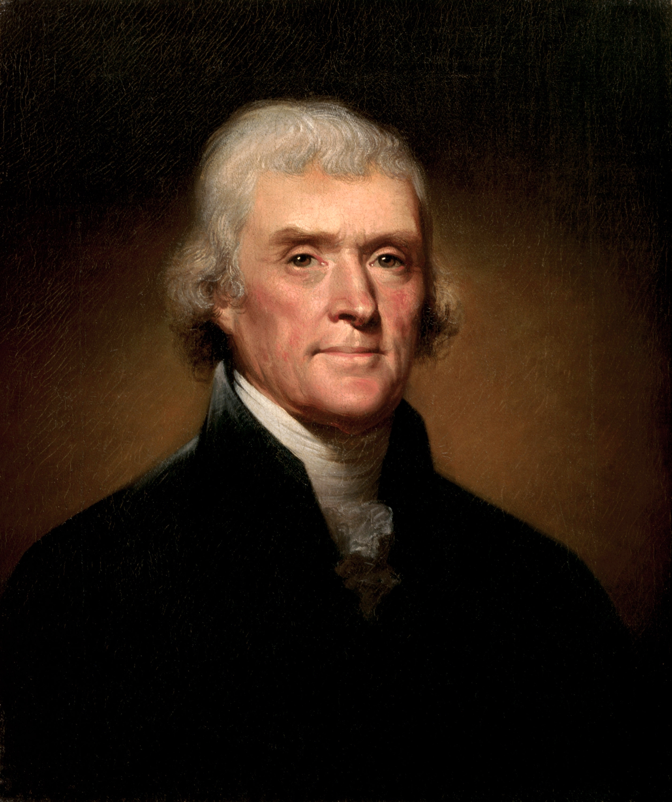
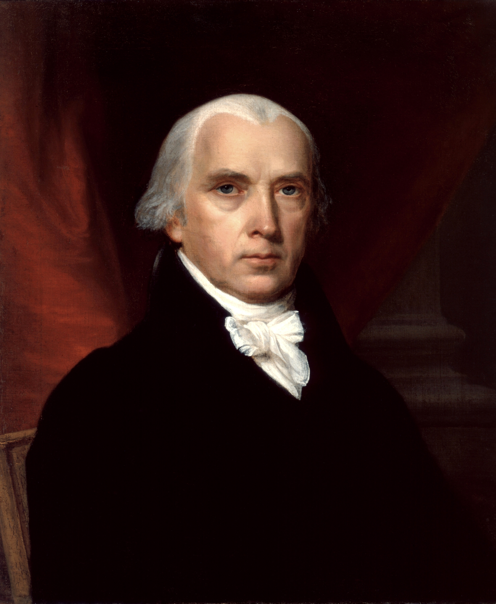
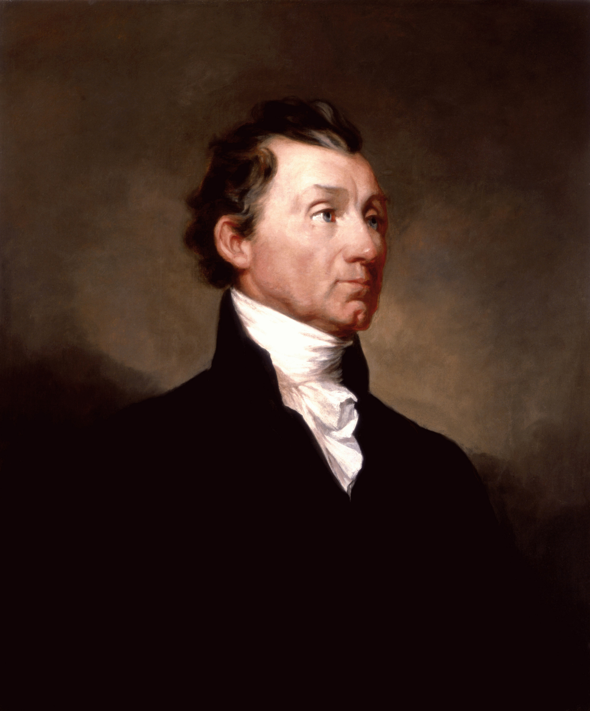
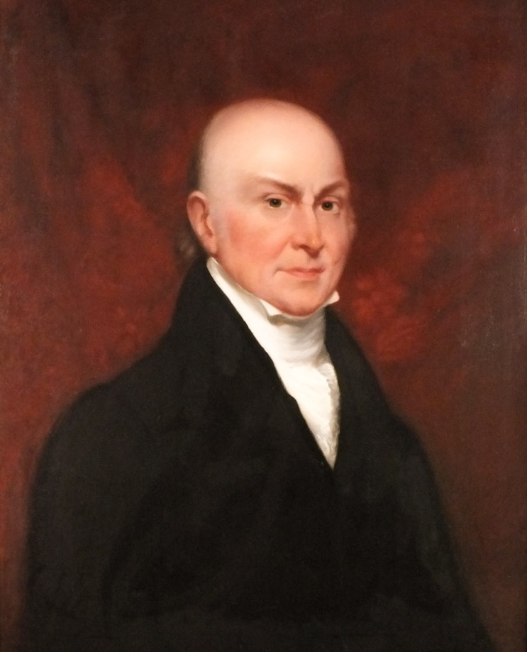
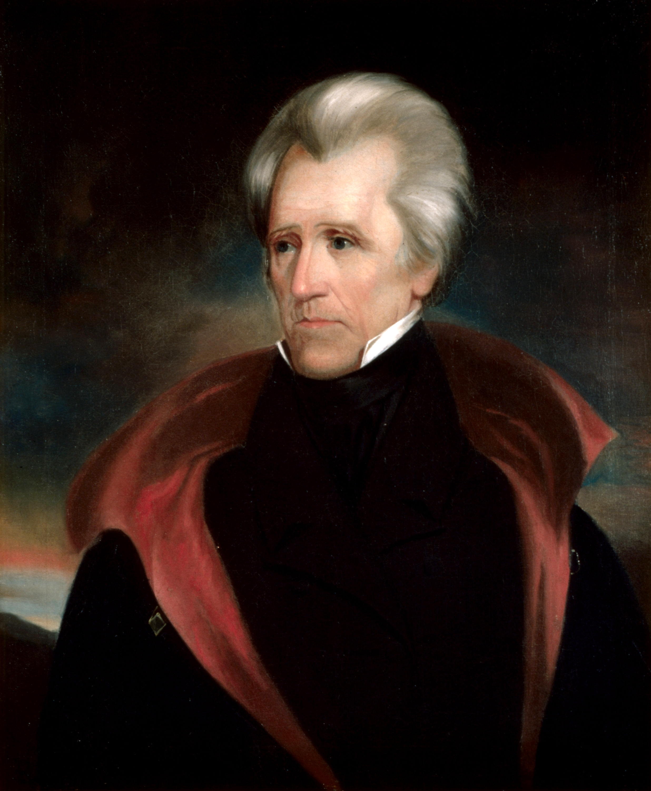
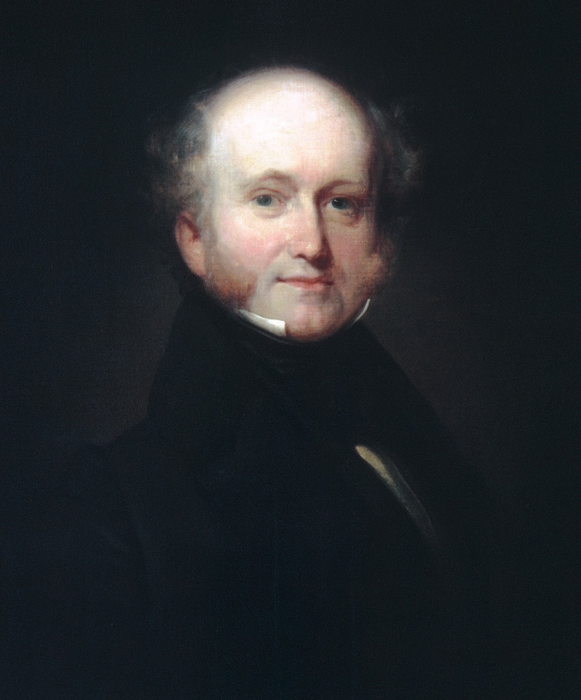
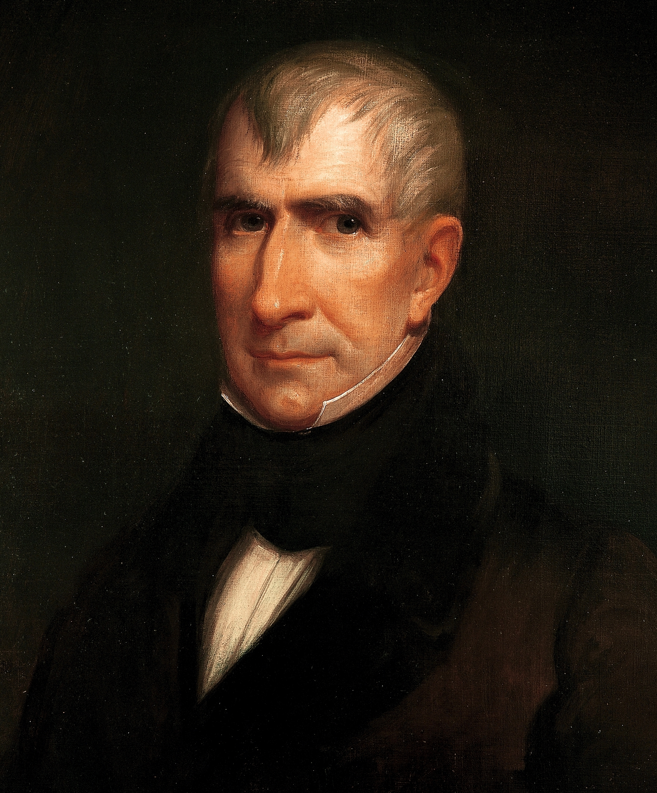
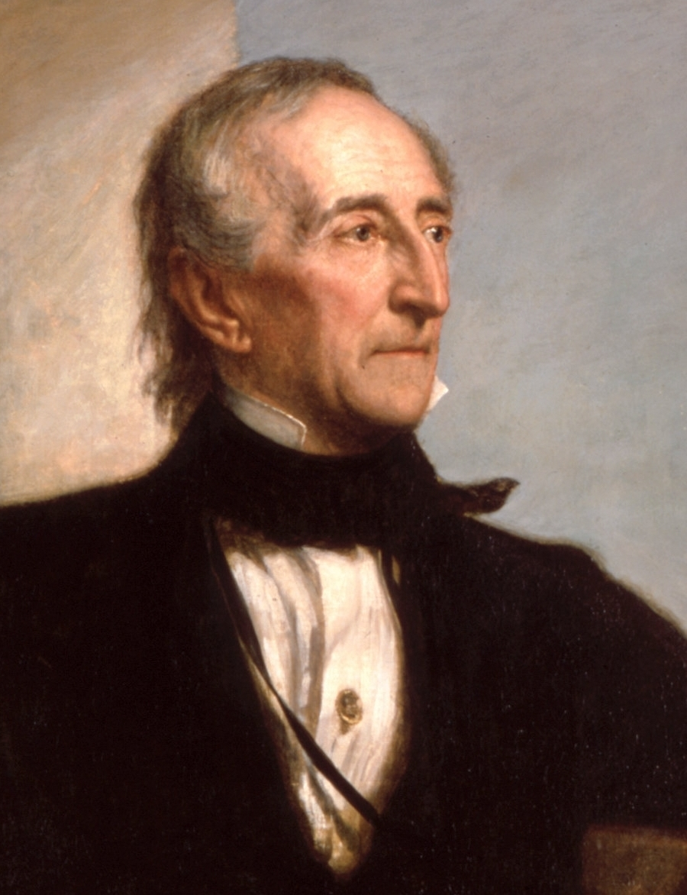
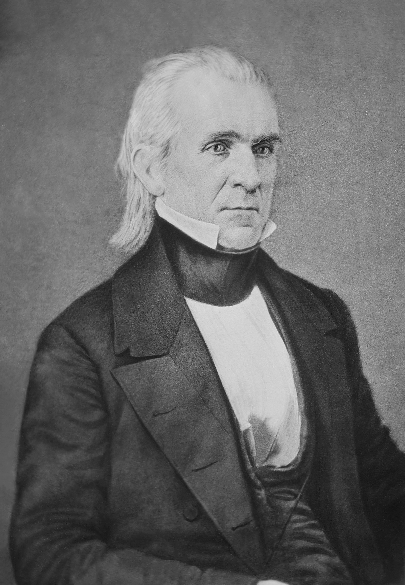
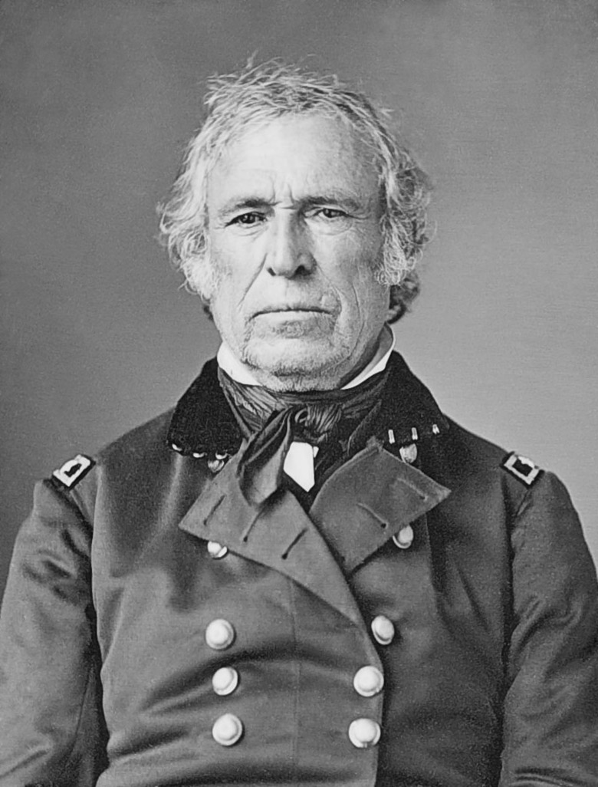

Home
News
The 1800s to the 1850s
Thomas Jefferson
- Credited with popularizing French Fries to the US
- Loved Macaroni and Cheese also credited in populizing it as well
- Dies on the same day as frienemy John Adams that being July 4th 1826

James Madison
- The shortest president being 5 feet 4 inches and weight about 100lb
- Got arrested with Thomas Jefferson becuase carriage riding was illegal on Sundays
- Wrote George Washington's first speech as president

James Monroe
- Was the first president to travel by steamboat
- Is the only person to have held two cabinet positions at once this being the Secretary of State and the Secretary of War under James Madison
- The only president to have a capital in another country to be named after him. This being the country of Liberia due the it's former status of being a American colony as a destination for freed African Americans

John Quincy Adams
- Enjoyed skinny dipping in the Potomac
- Kept a pet aligator at the White House
- Approved an expedition to the center of the Earth

Andrew Jackson
- Enjoyed dueling participating in 5 to 100 of them
- Was the only president to have been a prisoner of war. This being in the Revolutionary War.
- Had a bullet for the majority of his life. This came from a duel and often caused in pain

Martin Van Buren
- Is the only president to not directly trace their ancestory back to King John of England
- Is the only president to have English as a second language his first language was Dutch
- Was the first president born as a American citizen

William Henry Harrison
- Had the shortest presidency
- Was the first Wig to become president
- Was known as Old Tippeconoe due to the American victory at the Battle of Tippeconoe against Native Americans leading the force even though he was governer at the time. This also led to the myth of The Curse of Tippecanoe

John Tyler
- Became the first president not elected
- He had more children then any other president this being a resounding 15. From two wives. Which he took after his first wife died.
- Is the only president to be draped with a foreign flag when he died. This being the Confederate flag

James K. Polk
- Was the first dark horse president meaning that he was not well known before the presidential election
- In his campaign promised to not serve more then one term and indeed he did this
- Was famed for extending the United States to its contingent 48

Zachary Taylor
- James Madison was Taylor's second cousin
- Was another war hero this being the Mexican-American War
- Never voted in a past election
